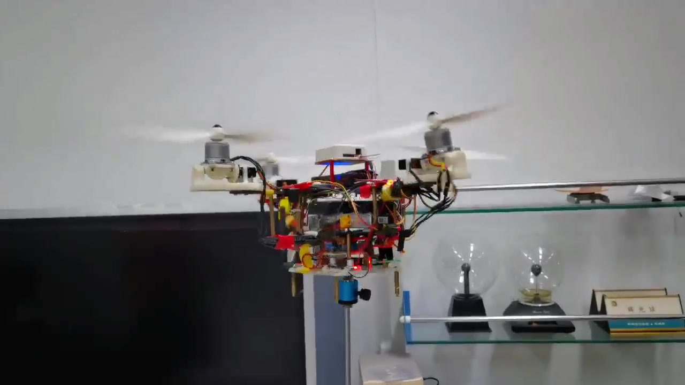

让推力方向也成为控制量
在旋翼与机臂之间加入独立倾转机构，电机调节推力大小，舵机调节推力方向，使剩余旋翼能够参与新的力矩分配。
ROBOTICS / PROJECT 02
当部分旋翼停止工作，
让剩余动力继续参与姿态稳定与降落。
以独立倾转机构拓展推力方向调节能力，将姿态反馈、控制分配与构型切换连接起来，探索对桨停转后的双旋翼控制。

01 / BACKGROUND
固定桨轴的常规四旋翼依赖各电机之间的推力差维持姿态。旋翼停转后，原有的推力与力矩平衡被打破，正常构型的控制分配不再适用。
在旋翼与机臂之间加入独立倾转机构，电机调节推力大小，舵机调节推力方向，使剩余旋翼能够参与新的力矩分配。
通过遥控触发继电器切断一对相对旋翼，切换有效执行器集合，使用剩余一对旋翼的转速与倾角协同完成降级控制验证。
倾转机构设计与装配 ／ 动力学建模与控制仿真 ／ 飞控集成与实物调试
02 / EXPERIMENTS
选择视频，查看试验过程与项目介绍。支持声音、全屏与手机观看。
视频暂时无法加载，请检查网络或单独打开视频。
EXPERIMENT / 01
在导轨与支架约束下开展样机测试，近距离观察倾转机构、旋翼运行与机体响应。
关注旋翼与倾转机构的动作，以及约束条件下的机体响应。
视频用于展示样机与试验过程；具体旋翼状态和降级效果需结合实验条件、控制日志共同判断。
03 / CONTROL ARCHITECTURE
姿态角外环与角速度内环构成串级控制，内环通过 PID 产生力矩需求。单飞控基于 PX4 二次开发，通过 QGroundControl 配置与监测。
遥控 / 上层指令
期望姿态根据姿态误差调节
期望角速度快速抑制转动偏差
期望力矩按有效构型解算
转速 / 倾转指令改变推力大小与方向
机体运动响应姿态角、角速度反馈
转速主要改变旋翼推力的大小，倾转角改变推力的方向。控制分配结合旋翼相对质心的位置、倾转方向和反扭矩，将期望合力与力矩转换为执行器指令；旋翼停转后，分配依据也随之变化。
Fi = Ti · di(αi) τi = ri × Fi + τreaction,i
T 为推力大小，d(α) 为倾转后的推力方向，r 为旋翼相对质心的位置。对有效旋翼的力与力矩分别求和，并结合推力、倾角及执行器变化率的限制进行分配。
04 / RECONFIGURATION
构型示意，编号仅用于说明，不表示实机编号或桨叶旋向。
ACTUATOR CONFIGURATION
四个旋翼参与控制，依据正常构型将总推力与力矩需求分配给各电机及倾转机构。
姿态控制持续产生修正需求；构型切换改变可用执行器及其效能。降级后需要同时关注推力余量、控制参数和输出约束。
通过辅助通道发出试验切换指令。
继电器开关切断指定一对旋翼的动力。
失效通道退出，剩余电机与倾转机构协同。
持续进行姿态反馈与输出调节，观察下降过程。
断电、转速变化与舵机运动存在响应延迟。控制逻辑需要协调切换事件与分配状态，并考虑执行器限幅、变化率限制及积分饱和对姿态恢复的影响。
EXPERIMENT SCOPE
本页展示独立倾转样机及指定构型的实验记录。试验采用遥控主动触发断电，重点观察剩余旋翼的控制与降落表现；自动故障检测不属于本次演示内容。